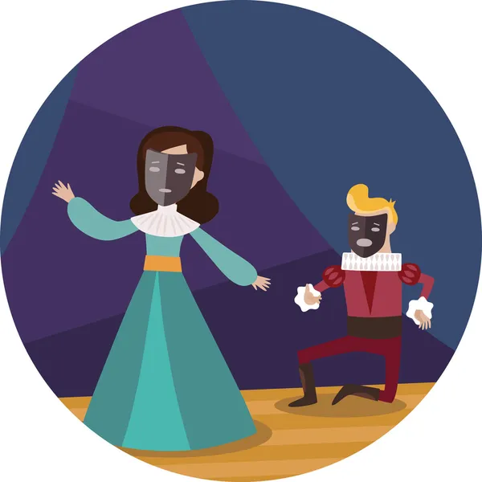
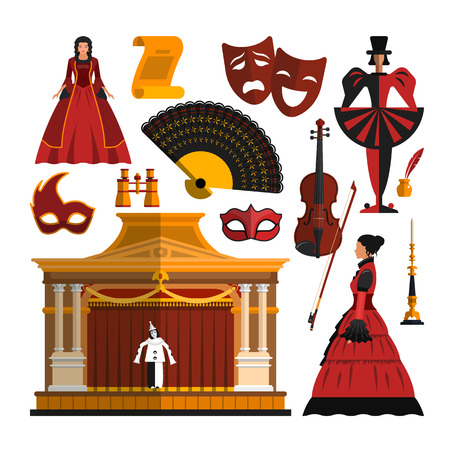

La dramatica
Los seres humanos primitivos danzaban y hacían gestos para practicar sus cacerías, e imitaban los movimientos de los animales; así inicia la representación. siglos después, los griegos realizaron representaciones en las fiestas en honor a sus dioses sobre todo Dionisio.
Actualmente, la dramática se entiende como la representación de una acción en forma de dialogo, en la que intervienen varios personajes, en un escenario. las obras dramáticas reflejan sentimientos, problemas y situaciones que viven las personas.
imagen tomada de vecteezy
El lenguaje teatral
Las obras de teatro se escriben con el fin de que sean representadas delante de un público. Para que la representación pueda darse, los actores (que actúan como personajes) preparan sus parlamentos (lo que dicen) o diálogos (lo que conversan entre ellos). los actores se guían con las acotaciones (indicaciones del autor).
Narrador: algunas obras lo tienen para presentar el lugar, los personajes y las acciones
Acotaciones: indicaciones sobre el ambiente o sobre la actuación.
Personajes: quienes desarrollan las acciones.
Parlamento: lo que dice un personaje.
Diálogos: conversación entre los personajes.
Los actores
Para su representación, las obras de teatro requieren algunos elementos. uno de ellos es el actor. Los actores son los personajes que representan a los personajes en una obra teatral .

imagen tomada de depositphotos
El espacio teatral
Este se construye con la interacción de varios componentes:
La escenografía: permite crear espacios donde se desarrolla la obra.
La utilería: corresponde a los objetivos que se necesitan en la obra: ventanas, mesas, sillas, etc.
El vestuario: es el que utiliza cada actor para caracterizar a su personaje.
La música: corresponde a la época y al contenido de la obra.
El maquillaje: permite caracterizar al personaje según su edad.
La iluminación: es muy importante para crear el ambiente deseado

imagen tomada de 123RF
Las clases de textos dramáticos
Las situaciones que presentan los textos teatrales generan diversas emociones; por ejemplo, risa, llanto o admiración. Según como se preséntenlos conflictos entre los personajes, estos textos pueden ser dramáticos, cómicos o trágicos.
La comedia: en la comedia, la risa y el humor están presentes; además, casi siempre tiene un final feliz. En las comedias, los personajes, el conflicto y la enseñanza tienen características particulares.
La comedia musical: la comedia musical combina, música, danza, canciones y diálogos. Al igual que en la comedia tradicional, su propósito es criticar a una persona o situación con el objetivo de ridiculizar.
La tragedia: en las obras dramáticas, también hay llanto y dolor. En la tragedia, los personajes se ven enfrentados a situaciones inevitables que los conducen a la muerte o a la locura. El siempre es triste.
La tragedia se originó en Grecia y se inspira en ritos y representaciones sagradas. En la primeras tragedias griegas, los personajes no podían huir de su destino, es decir ellos ya sabían lo que les sucedería , pero no podían hacer nada para cambiarlo.
El drama: se representan situaciones de la vida como acontecen en la realidad, con sus alegrías y tristezas. A diferencia de la comedia y de ola tragedia, el drama no tiene un carácter definido, sino que combina aspectos trágicos y cómicos. En el dram, el desenlace puede ser feliz o triste.
imagen tomada de lifeder
Ahora darás clic en siguiente.